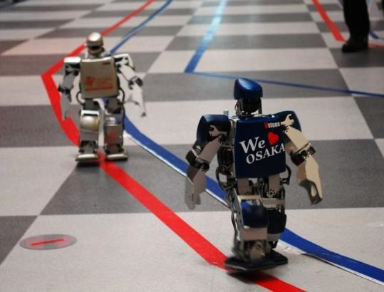

ROBO CHASE
You Just Can't Differentiate Between A Robot And The Very Best Of Humans.
Introduction:-
A car crossing all the hurdles and sharp turns maintaining the speed and defeating the opponents
Problem Statement:-
The track will be an all terrain track with sharp turns and big jumps. The bot should be able to cross these bumps and obstacles without any human aid. Most part of the track would be made of wood and other materials may be used to create the obstacles.
Rules & Regulations:-
- The width of the track would be 45-50cm along with boundary lines.
- Some Parts of the track in different levels (as event will be divided into 3 levels) may be elevated or dumped with dirt and mud to create suitable obstacles.
- Despite organizers to keep the track quality intact, the track is subjected to wear and tear as machines run over it (relaxation to participant).
- The complete race will be divided into three stages- preliminaries, pre finals and finals.
Preliminaries:-
- This round will basically consist of easy hurdles such as turns, obstacles, sand, banked turns and gravel etc.
- Additionally, some blocks will be there on path for additional bonus point which participant has to collect and take them to a particular checkpoint available on path.
- Participant with highest score will qualify for final round.
Finals:-
- It will be final chance for the participants .Every team will be given two consecutive laps, out of which faster lap would be considered.
- It will consist of the little difficult hurdles in path.
Judging Criteria:-
- The time taken to a complete a specific stage would be the sole criteria for judging the winner.
- Many of the penalties will be charged as per situations.
- Wireless bot will get extra points.
Team Size:-
Maximum three participant can take part.Eligibility Criteria:-
- All students with a valid Registration Card of DEXTRA 2014 along with their respective educational institutes' ID Cards are eligible to participate.
- Non-JUET participants must possess an Accommodation Confirmation Letter (ACL) issued by the organizing body at the time of registration. Registration Card will not be issued without ACL
Event Managers:-
| Saurabh Baliyan | : | 8305175982 |
| Rishu Ranjan | : | 8871426845 |
| Sandeep Rana | : | 7415749764 |